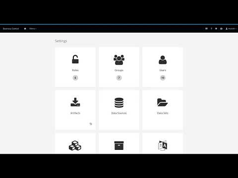
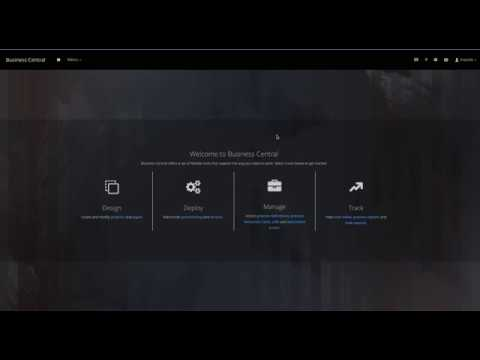

Service task repository integrated into Business Central
jBPM also provides standalone service repo that could be used from jBPM designer to import service tasks. Though that was just intermediate step towards better integration with authoring tooling – Business Central.
Brand new integration between service task repository and business central is under development and I’d like to share a bit of news about this upcoming feature…
Service Task administration
First and foremost there is global administration of service tasks. This allows to select what service tasks (that the authoring environment comes with) are allowed to be installed in projects.
There are three configuration options
- Install as Maven artefact – will upload the jar file of the handler if it does not exist in the local or Business Central’s maven repo
- Install service tasks artefact as maven dependency of project – will update pom.xml of project upon installation of the service task
- Use version range – when adding service task artefact as project dependency it will use version range instead of fixed version e.g. [7.16,) instead of 7.16.0.Final
Service task installation – project settings
Once the service tasks are enabled they can be used within projects. Simply go into project settings page and install (or uninstall) service tasks of your desire. Note that this settings page will only list service tasks that are globally enabled.
Service tasks can then be installed into projects. During installation following will be done
- dedicated wid (work definition) file is created for installed service task
- custom icon for the service task is installed into project resources (if exists)
- pom.xml of the project is updated to include dependencies (if it is enabled in the global settings)
- deployment descriptor is updated to register work item handler for the service task

This is part one of this feature so stay tuned for more updates in coming weeks…
Here is a complete video showing all features in action including
- service repository administration
- uploading new service tasks
- default service tasks (REST, Email, Decision, etc)
- installing service tasks into project with prompt for required parameters


{kind=link}
{kind=link}
{kind=link}